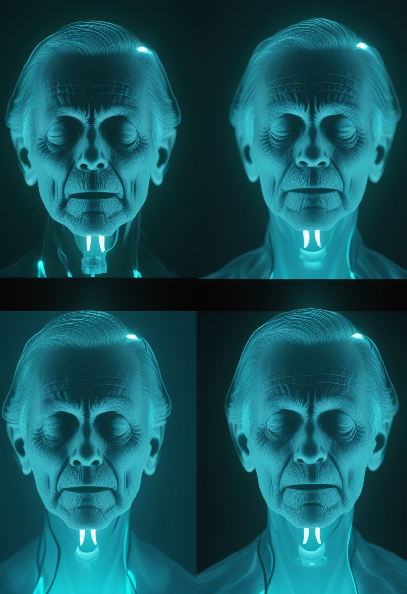
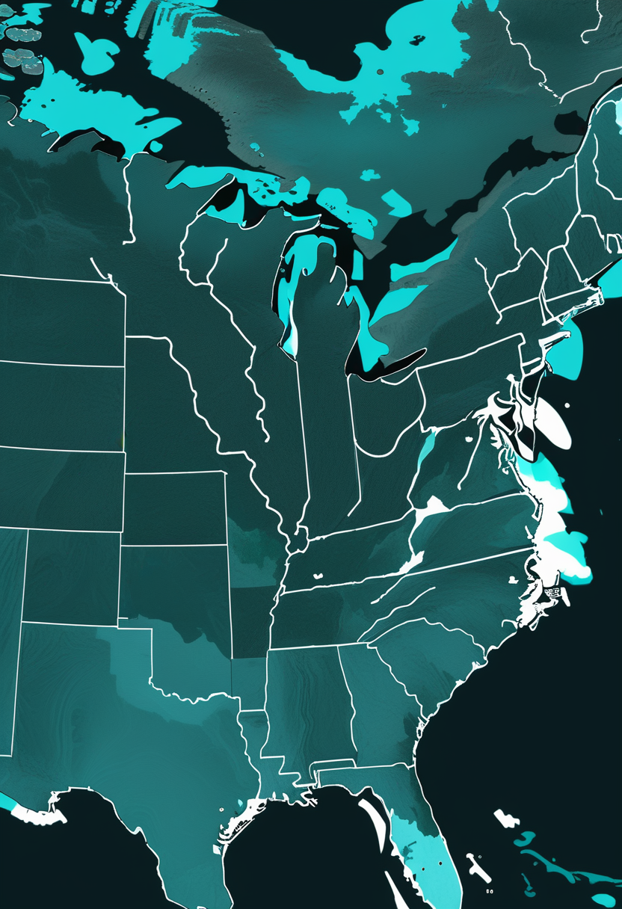
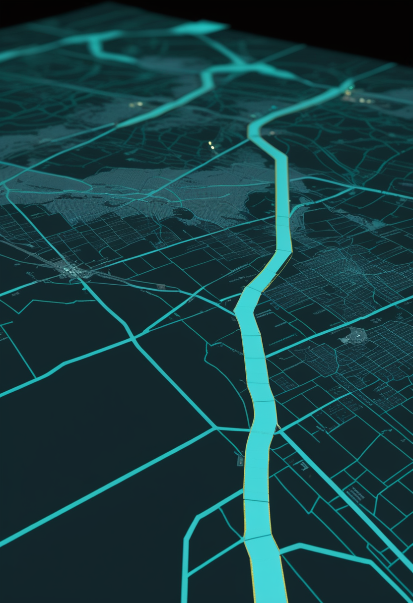
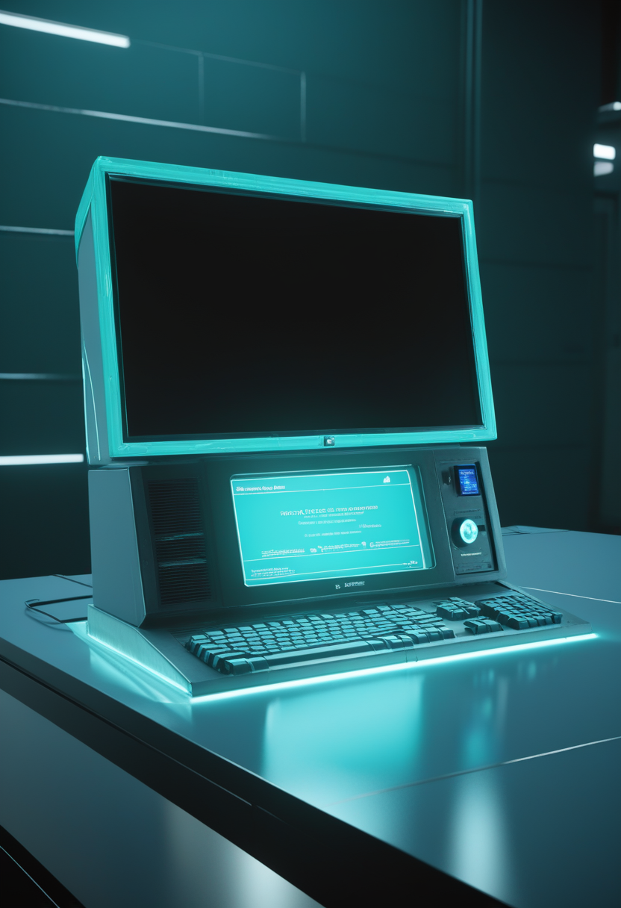
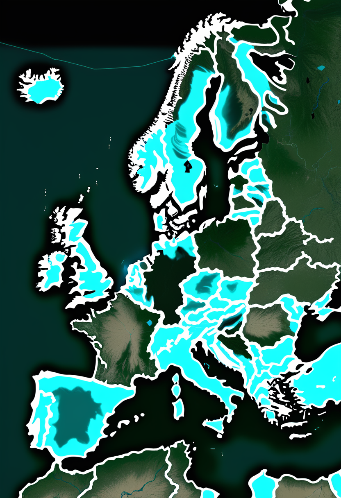
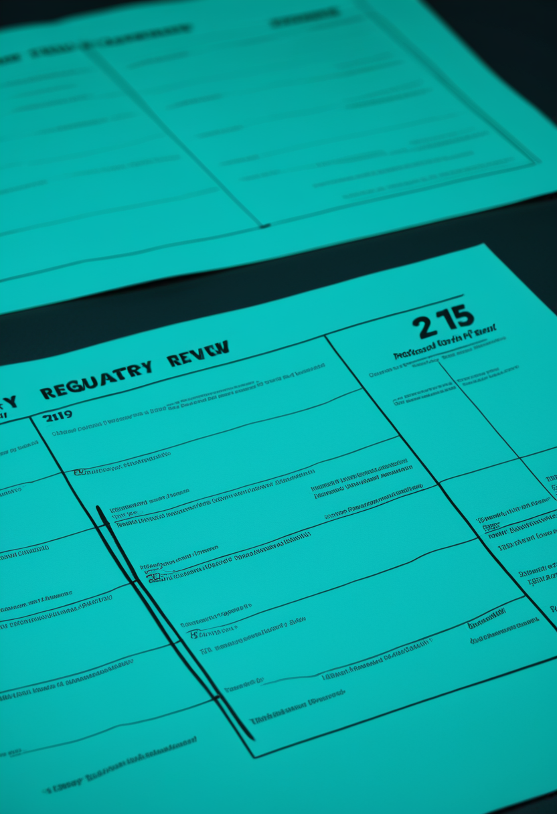
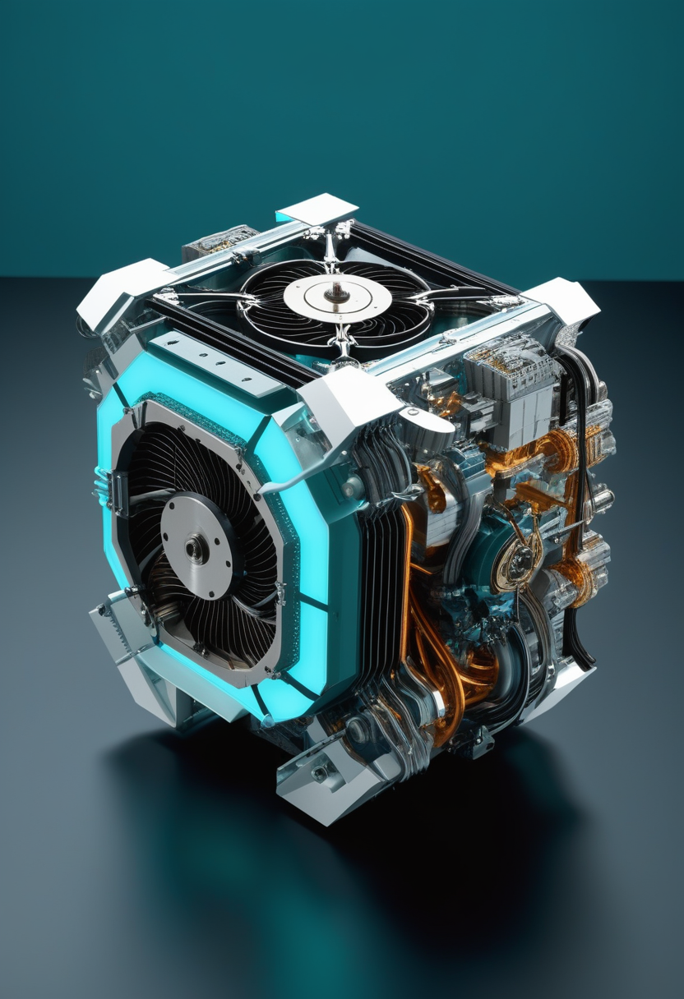
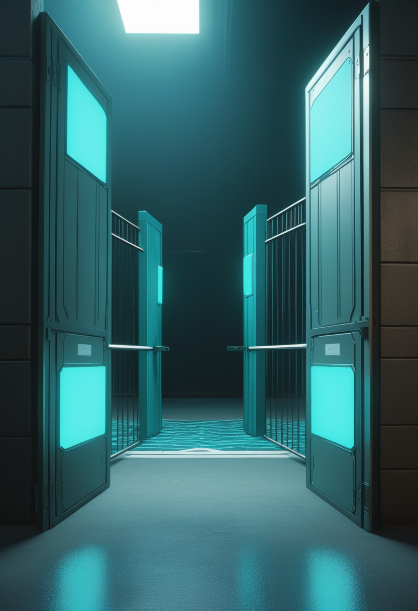

日曜日の便り。本日日本時間20時26分、NASAのナンシー・グレース・ローマン宇宙望遠鏡がファルコン・ヘビーで打ち上げられる ― 8月28日の審査で「GO」判定、好天確率60%。コンゴ民主共和国のエボラは、WHOアフリカ地域事務局の週報(8月23日時点)で1週間に確定+563例・死亡+302人が加わり累計5,584例・2,680人となった一方、より新しいECDC集計(8月26日時点)では5,794例・2,786人に達しており、増加の継続が二系統で裏づけられている。米国の麻疹は排除認定の判定を目前にCDCのデータ更新が止まり、欧州の西ナイル熱は12カ国625例・今季初めての感染地域が21に上る。自由の章では、Neuralinkの被験者が26人に到達し発話復号のVOICE試験が動く一方、Paradromicsが発話回復目的の完全埋込み型BCIとして初のIDEを取得、視線入力は文字入力の道具から意図を指す道具へと役割を広げている。美の章では、生きている本人を模す「認知デジタルツイン」と亡くなった人を模す「グリーフボット」、そのどちらの写しにも権利と統治の議論が追いついてきたことを伝える。畏敬の章はローマンの打ち上げに加え、初期宇宙の大質量銀河が想定の3〜4倍重いかもしれないという発見、そして絶対零度近くの熱を仕事に変えた初の量子熱機関を並べた。命の章では、アピテグロマブの承認判断まで残り31日となったこと、サラナーセンが80mgで3本の第3相試験に入ったこと、そして日本の新生児スクリーニングが自治体ごとに公費化を積み上げていることを伝える。
8/29号の続報 ― 本日8月30日午前7時26分(米東部夏時間)、日本時間では同日20時26分に、NASAのナンシー・グレース・ローマン宇宙望遠鏡がケネディ宇宙センターLC-39Aからファルコン・ヘビーで打ち上げられる。8月28日の打ち上げ準備審査で「GO」の判定が出ており、宇宙軍第45気象隊の予報は好天確率60%。懸念は雲と雷で、日中はむしろ条件が悪化する見込みのため、早朝の窓のほうが分がある。行き先は地球から約150万km離れた太陽・地球系のラグランジュ点L2である。ローマンが担うのは暗黒エネルギーと暗黒物質、そして系外惑星の探査で、一度に撮れる天域の広さがハッブルとの決定的な違いになる。同じ望遠鏡サイズで視野だけを桁で広げると、これまで何百回もの観測を要した領域が一枚に収まる ― 発見の数ではなく、発見の速度が変わる種類の変化である。ただし打ち上げは天候と直前の技術的判断で動きうる。予備の窓は8月31日午前7時22分(米東部夏時間)に用意されている。
9月30日のFDA判断期限まで、本日から31日。Scholar Rockが8月21日に公表した内容は、審査の主戦場が薬そのものではなく製造にあることを示している。査察でOAI(公的措置が必要)と分類された充填施設Catalent Indianaを生物学的製剤承認申請(BLA)から外し、第2の充填施設のみで審査が進行中である ― 同社によれば、この施設はFDAとEMAの直近の査察をいずれも通過した実績を持つ。PDUFA日は9月30日のまま変更なく、承認が期限までのいつでも下りうるとして、承認と同時に米国で発売できる体制が整えられている。アピテグロマブはミオスタチンの前駆体および潜在型に選択的に結合してその活性化を阻害する完全ヒト型モノクローナル抗体で、SMAで筋肉そのものを標的とする候補として初めて、主要な第3相試験(SAPPHIRE)で統計学的に有意かつ臨床的に意味のある効果を示した薬剤である。

ビオジェンのサラナーセンは、年1回投与を目指すスピンラザ(ヌシネルセン)の後継候補として、80mg用量で3本の第3相試験に入っている。STELLAR-1は生後6週未満で遺伝子診断のついた未治療・発症前の乳児を対象とする非盲検試験。STELLAR-2は、生後6週以下でゾルゲンスマによる発症前治療を受けた乳児に、その約6カ月後からサラナーセンを加える無作為化・二重盲検・シャム対照試験である ― 遺伝子治療を受けたあとに何を足すか、という問いに正面から答える設計になっている。SOLARは15〜60歳の青年・成人が対象で、未治療の人とロシュのエブリスディ(リスジプラム)で治療を受けてきた人の双方を含む。根拠となった第1b相の予備解析では、参加者の半数が支えなしの座位、ハイハイ、起立、歩行といったWHOの運動マイルストーンを新たに1つ以上獲得した。

発症前に見つけて発症前に治療する、という前提を作るのが新生児スクリーニングである。日本ではこども家庭庁の実証事業として、SCID(重症複合免疫不全症)とSMAの検査が自治体単位で公費化されてきた。大阪府・堺市は2024年3月から国と府・市の費用助成で検査料が無料になり、神奈川県・横浜市・川崎市・相模原市は2024年10月1日の採血分から開始した。静岡県は2025年5月1日以降に県内医療機関で出生した新生児が対象で費用は全額公費、新潟県・新潟市は2025年7月1日から実証事業に加わっている。検査は新生児の乾燥ろ紙血からSMN1遺伝子エクソン7の欠失を調べる方式で、陽性となった場合はMLPAやddPCRで確認する。位置づけはあくまで全国展開に向けたデータ収集の段階であり、既存の20疾患に2疾患を加える制度としての全国一律実施は、まだ確定していない。
三本は薬・順序・入口という別の層にある。アピテグロマブの日程を握っているのは充填工場で、審査は薬効ではなく製造の問題として最後の1カ月に入った。サラナーセンのSTELLAR-2は「遺伝子治療のあとに何を足すか」を試験の設計そのものに書き込んだ ― 治療が一度で終わらない前提に変わりつつある。そして新生児スクリーニングは、その全部が届くための入口を自治体ごとに一つずつ開けている。
Neuralinkの臨床規模は、2026年1月時点で公表されていた21人から26人へ増えた(6月23日までに到達。二次報道に基づく値のため要確認)。試験は二本柱になっている ― 脊髄損傷やALSによる四肢麻痺の人がコンピュータやロボットアームを思考で操作するPRIMEと、重度の発話障害がある人の思考から語を復号するVOICEである。VOICEの第1例は2024年にALSと診断されたKenneth Shock氏で、2026年1月に埋込みを受け、N1インプラントが読み取った脳信号を音声へ変換して意思疎通を続けている。FDAは発話回復技術にブレークスルー機器指定を与えており、視覚野を刺激するBlindsightにも同様の指定が出ている。展開は米国外にも及び、UAE、英国、カナダで試験が始まった。
Paradromicsは、完全埋込み型のBCIで重度の運動障害がある人の発話を回復させることを目的とした臨床試験として、初のIDE(治験機器適用免除)をFDAから取得した。重度の発話障害がある2名を対象に、Connexus BCIの長期使用による発話回復とコンピュータ操作を評価する設計である。2026年6月17日にはミシガン大学ヘルスで、承認済みのConnect-One早期実現可能性試験における初の埋込み手術が完了した。装置は421本の微小電極で個々のニューロンの信号を取り、胸部に置いた送受信器から皮膚を介して外部受信機へ無線で送る。実施施設はミシガン大学、UCデービス、マサチューセッツ総合病院の3カ所である。Neuralinkが規模で先行する一方、Paradromicsは「発話」という単一の適応で規制上の道筋を先に引いた形になる。
埋込み型が発話へ向かう一方で、視線入力は使い道を横へ広げている。arXiv:2601.17404は、支援ロボットアームによる日常動作の支援を視線で駆動する制御手法を扱う ― 利用者が対象物を見るだけで、アームが何を取りに行くかを推定して動作を組み立てる方式である。この方向が選ばれる理由は速度の壁にある。注視時間による確定は通常500〜1000ミリ秒を要し、文字入力としての意思伝達は毎分5〜10語程度で頭打ちになる。一文字ずつ打たせるかぎりこの壁は越えられないが、視線を「意図の指示器」として使い、細かい実行は機械側に任せれば、同じ入力帯域でできることが増える。ALSの人が現に日々使っているのは埋込み型ではなく視線入力であり、この方向の改善は届く範囲が広い。
三本は同じ問題に別の側から当たっている ― 帯域が足りない。Neuralinkは電極を増やして復号の精度を上げ、Paradromicsは適応を発話一つに絞って規制の道を通し、視線側は入力そのものを増やす代わりに機械側の推論に仕事を移した。技術の勝敗を決めるのは毎分何語かではなく、その人が今日どれだけのことを済ませられたかである。

WHOアフリカ地域事務局の週報第15号(データは8月23日時点)によれば、コンゴ民主共和国のエボラ(Bundibugyo型)は前週の報告から確定+563例・死亡+302例が加わり、累計確定5,584例・死亡2,680となった。報告数から計算した致死率は約48.0%である。影響を受ける保健区は55から57へ増え、新たに加わったのはBas-UéléのViadanaとNord-KivuのMutwangaだった。より新しいECDCの8月27日更新(報告データは8月26日まで)では確定5,794例・関連死亡2,786(致死率約48.1%)で、隔離入院843人、6州・151保健区のうち60保健区が影響下にあり、特定された接触者の82.3%が追跡されている。二つの数字は集計基準日が違うだけで矛盾しない ― 8月23日から26日までの3日間に約210例が積み上がった計算になる。

米国の2026年の麻疹は、CDCの8月20日時点の集計で2,777例。47の管轄から報告され、2026年に新たに把握されたアウトブレイクは36件、確定例の94%(2,614例)がアウトブレイクに関連する。入院は7%で、2025年の11%より低い。年間報告数としては2000年の排除宣言以降で最多であり、2025年通年の2,289例をすでに上回っている。ここで一つ実務的な問題が起きた ― CDCが8月28日に予定していたデータ更新は遅延し、本号作成時点では8月20日時点が最新のままである。排除認定の判定は、CDCの委員会が今月データを検討し、汎米保健機構(PAHO)の地域検証委員会へ所見を送り、11月にPAHOが結論を公表する日程になっている。判定材料の更新が止まっているのは、その直前の時期である。

ECDCの集計では、2026年の伝播シーズン開始から8月21日までに、欧州の12カ国で西ナイルウイルスの国内感染が625例報告された。内訳はイタリア311、ギリシャ157、スペイン63、北マケドニア37、ルーマニア28、フランス17、セルビア6、オランダ2、アルバニア・オーストリア・ドイツ・コソボが各1である。影響地域は98で、うち21地域はこのシーズンに初めて感染が確認された場所だった。イタリアが全体の約半分を占め、上位3カ国で531例と全体の約85%になる。西ナイル熱は蚊が媒介し、感染者の大半は無症状だが、およそ150人に1人で神経侵襲性の重症に至る。エボラや麻疹と違って封じ込めの対象が人ではなく蚊と気候であるため、報告地域の広がりのほうが症例数より重い指標になる。
三本は「数えられているか」の話で並ぶ。エボラは週報とECDCで基準日が違う二つの数字が同時に流通し、それでも増加の向きは一致している。米国の麻疹は、排除認定の判定を目前にしてデータ更新のほうが止まった。西ナイル熱は症例より「今季初めての地域が21」という広がりが効く指標になる。監視は流行そのものではなく流行の像を作る装置であり、装置が止まると像も止まる。
NASAのナンシー・グレース・ローマン宇宙望遠鏡は、本日8月30日午前7時26分(米東部夏時間、日本時間20時26分)、ケネディ宇宙センターLC-39Aからファルコン・ヘビーで打ち上げられる。8月28日の打ち上げ準備審査でNASAとSpaceXは「GO」の判定を出した。宇宙軍第45気象隊の予報は好天確率60%で、雲と雷が主な懸念だが、日中のほうが条件が悪化する見込みのため早朝の窓に分がある。予備の窓は8月31日午前7時22分(米東部夏時間)。行き先は地球から約150万km離れた太陽・地球系のラグランジュ点L2で、暗黒エネルギーと暗黒物質の性質を調べ、系外惑星を探すのが主な任務である。正式なコミット日である2027年5月から9カ月の前倒しにあたる。
ライデン大学が主導する国際チームは、Nature Astronomyに8月18日付で論文を発表した。対象は数十億年前に星形成を終えた成熟した大質量銀河9個で、JWSTの極めて深いスペクトルと超大型望遠鏡(VLT)による従来の地上観測を組み合わせて解析した。見えてきたのは、暗く軽い低質量星が想定よりはるかに多いという姿である。これまで天文学者は、星が生まれるときの質量の分布 ― 初期質量関数(IMF) ― が天の川銀河とおおむね同じだと仮定してきた。ところが今回の銀河は「ボトムヘビー」、つまり軽い星に偏っており、そこから逆算するとJWSTが見つけてきた遠方の大質量銀河は当初の報告より3〜4倍重い可能性がある。これはビッグバンからわずかな時間で巨大な成熟銀河ができた理由を、いっそう説明しにくくする結果でもある。低質量星は惑星を多く持つため、初期宇宙にできた惑星の数の見積もりにも影響しうる。

デュシェンヌ型筋ジストロフィーの心筋症に対する細胞治療デラミオセルについて、FDAは審査期限を2026年11月22日へ延長した。当初のPDUFA日は8月22日で、追加のHOPE-3データを受理したことによる延長である。経緯は入り組んでいる ― 2026年3月にFDAは以前の審査完了通知(CRL)を撤回して審査を再開し、Class 2再申請として8月22日を期限に設定した。ところが7月29日の諮問委員会は9対3で「有効性の実質的な証拠に当たらない」と投票した。争点は二つで、無作為化のあとに統計解析計画を変更した点と、左室駆出率(LVEF)がこの集団で臨床的有益性の妥当な代替指標といえるかどうかである。一方でLancetは同じHOPE-3の結果を査読を経て掲載しており、査読誌の判断と規制当局の諮問委員会の判断が正面から食い違う事例になっている。SMAと同じ神経筋領域で、代替指標をどこまで信頼するかという問題が繰り返し現れている。

アールト大学のMikko Möttönen教授らは、超伝導回路を用いた初の周期動作型量子熱機関をNature Communicationsに報告した(論文名「Initial demonstration of a quantum heat engine based on dissipation-engineered superconducting circuits」、DOI: 10.1038/s41467-026-72651-x)。構成はトランズモン量子ビット、共振器、量子回路冷凍機の三つで、これらが組み合わさって微小なオットー機関 ― 自動車のエンジンと同じ熱力学サイクル ― として働き、絶対零度近くの熱を仕事へ変換した。狙いは発電ではない。将来の版が量子コンピュータの内部で自律的に動けば、量子ビットを冷やしたり操作したりするために外部から引き込んでいる大量のマイクロ波ケーブルを減らせる。ケーブルは高価であるうえに雑音源でもあるため、量子ビット数を大きく増やすうえでの物理的な制約になっている。
三本のうち二本は「測り方を変えると答えが変わる」話である。ローマンは視野を広げて発見の速度を変え、JWSTの銀河はIMFという仮定を替えただけで質量が3〜4倍になった。デラミオセルは代替指標をどこまで信じるかで査読誌と諮問委員会の結論が割れた。仮定の置き方が結論を決める場面では、データを増やしても決着しない。
arXiv:2606.23094(2026年6月22日投稿)は、個人の認知や意思決定の様式を模したAIモデル ― 認知デジタルツイン ― の倫理的リスクとガバナンスを整理している。扱われるのは、本人の同意がどこまで及ぶのか、モデルを本人以外が目的外に使うことをどう防ぐのか、モデルの所有権は誰にあるのか、そして本人と写しが時間とともに乖離したときにどちらの判断を採るのか、といった論点である。本紙8月27日号では、bioRxivの研究に基づき、脳の解剖と活動を再現し医療介入を試すデジタルツインの進展を扱った ― そこでの対象は脳の機能だった。今回は同じ「写し」という発想の対象が意思決定の様式へ移っている。脳の機能なら再現度を測定できるが、意思決定の様式は何をもって「一致した」と言うかの基準から作らねばならない。
グリーフボット ― 生成AIで故人の話し方や記憶を再現するチャットボット ― について、2026年に査読研究が相次いだ。Frontiers in Digital Healthの質的研究は、死別支援としてのグリーフボットに対する公衆の認識を扱い、慰めとして受け入れる声と不気味さや不謹慎さを感じる声が同じ人の中に同居する両義性を報告している。宗教的背景による違いも大きく、ヒンドゥー教の共同体では「デジタルの転生」が終末論と衝突し、イスラームの伝統では故人をAIが演じること自体への反対が示された。別の研究は、故人のデジタル表現との関係が最も強く働くのは死別後およそ7〜8年以内で、その後は弱まると報告する ― 悲嘆の時間構造と技術の使われ方が対応しているという指摘である。技術が先に普及し、規範があとから追いつく典型的な順序をたどっている。

スタンフォード大学ロースクールのLaw and Biosciencesブログは2026年3月30日、神経データを財産法の枠組みで守ろうとする発想の限界を論じた。UNESCOが2025年11月12日の総会で採択した神経技術の倫理に関する勧告 ― 神経技術に関する初の世界標準で、神経データの特別な機微性、精神的プライバシー、思考の自由を明記する ― を出発点に、では誰がそのデータを「持っている」のかを問う構成である。論旨は、所有権のモデルが取引を前提にしている点にある。財として構成すれば売買も譲渡も可能になるが、神経データは人格に直結した情報であり、売れるようにすること自体が保護を弱めかねない。人権の枠組みで扱うほうが妥当だ、という主張である。米国では州法が先行し、コロラド州が神経データを機微な生体データとして保護する法律を制定、カリフォルニア州はCCPAの機微個人情報に、モンタナ州は「精神の増強」を対象に加えている。
三本とも「写しに対する権利」を扱っている。認知デジタルツインは生きている本人の写し、グリーフボットは亡くなった人の写し、神経データはその写しを作る材料である。UNESCOの勧告は材料の側に保護を置き、財産法ではそれを守りきれないと指摘された。写しを作る技術のほうは、いずれもすでに動いている。
日曜日の便り。本日日本時間20時26分、NASAのナンシー・グレース・ローマン宇宙望遠鏡がファルコン・ヘビーで打ち上げられた ― 8月28日の審査で「GO」判定、好天確率60%。コンゴ民主共和国のエボラは、WHOアフリカ地域事務局の週報(8月23日時点)で1週間に確定+563例・死亡+302人が加わり累計5,584例・2,680人となった一方、より新しいECDC集計(8月26日時点)では5,794例・2,786人に達しており、増加の継続が二系統で裏づけられた。米国の麻疹は排除認定の判定を目前にCDCのデータ更新が止まり、欧州の西ナイル熱は12カ国625例・今季初めての感染地域が21に上った。自由の章では、Neuralinkの被験者が26人に到達し発話復号のVOICE試験が動く一方、Paradromicsが発話回復目的の完全埋込み型BCIとして初のIDEを取得、視線入力は文字入力の道具から意図を指す道具へと役割を広げていることを報じた。美の章では、生きている本人を模す「認知デジタルツイン」と亡くなった人を模す「グリーフボット」、そのどちらの写しにも権利と統治の議論が追いついてきたことを伝えた。畏敬の章はローマンの打ち上げに加え、初期宇宙の大質量銀河が想定の3〜4倍重いかもしれないという発見、そして絶対零度近くの熱を仕事に変えた初の量子熱機関を並べた。命の章では、アピテグロマブの承認判断まで残り31日となったこと、サラナーセンが80mgで3本の第3相試験に入ったこと、そして日本の新生児スクリーニングが自治体ごとに公費化を積み上げていることを伝えた。
では、また明日の朝に。 — JaH